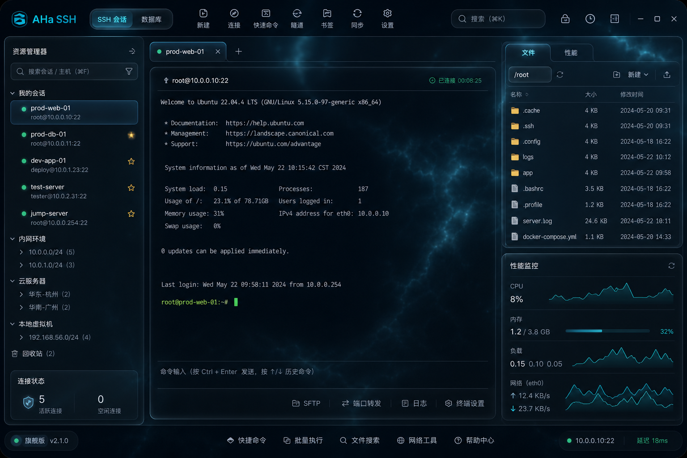
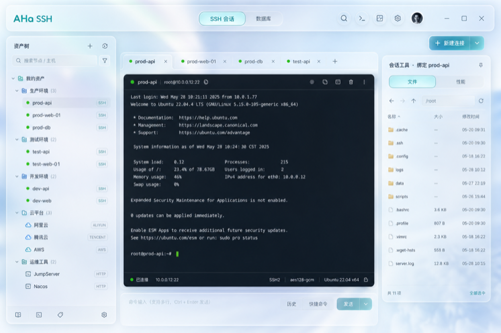
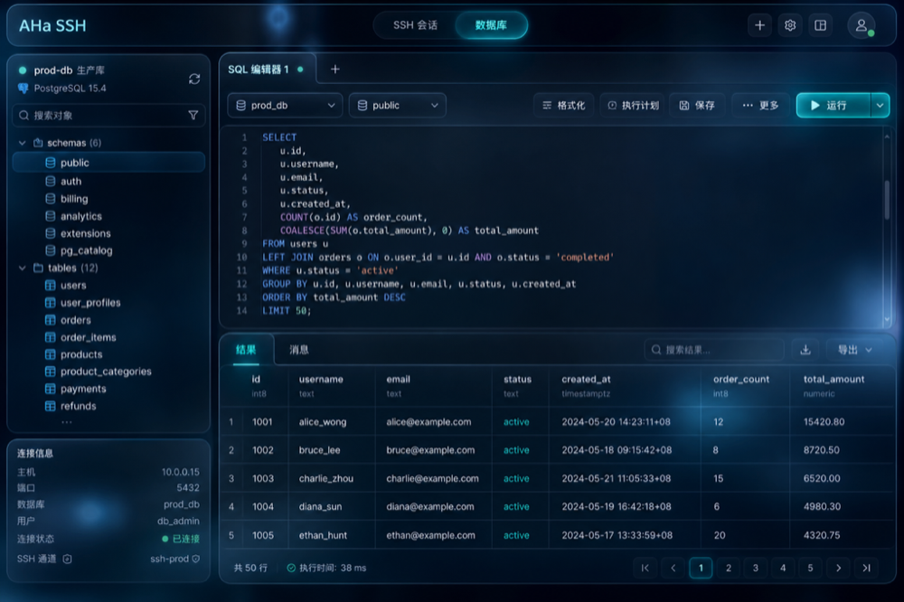

01
SSH 与终端
多标签 SSH、本地 Shell、密钥认证与会话日志，集中处理主机资产。
 AHaSSHTools
AHaSSHTools
跨平台运维客户端：SSH、文件、监控、数据与 AI
多标签 SSH、本地 Shell、密钥认证与会话日志，集中处理主机资产。
浏览、上传、下载、编辑远程文件，并跟踪每一项传输进度。
按会话查看 CPU、内存、磁盘、网络和主机信息，按需实时刷新。
连接关系库、缓存、搜索和消息服务，在同一工作台完成浏览与查询。
结合当前 SSH 和数据上下文辅助排查；变更操作始终需要确认。
桌面端与 Android、iOS 共用 Go 核心，让工具随运维现场同行。
Windows · macOS · Android · iOS


